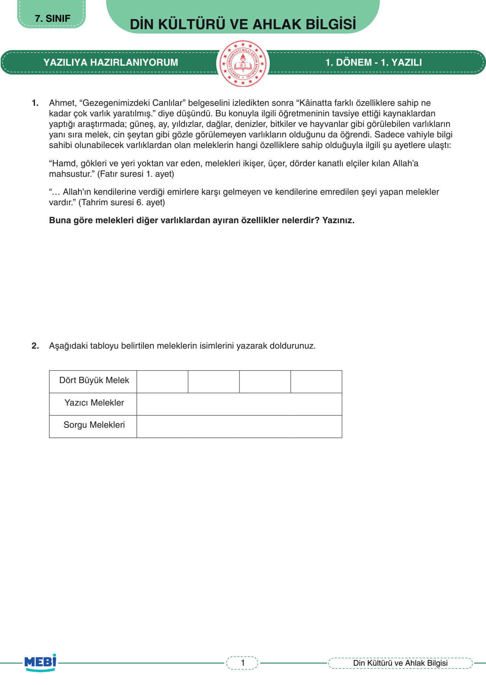
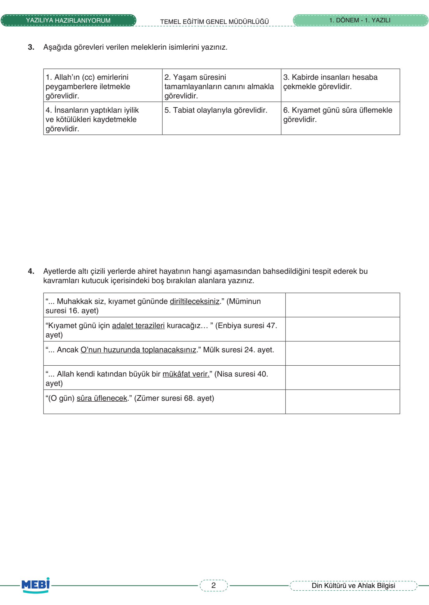
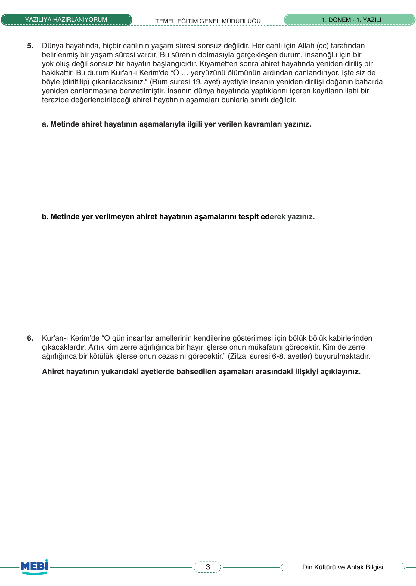
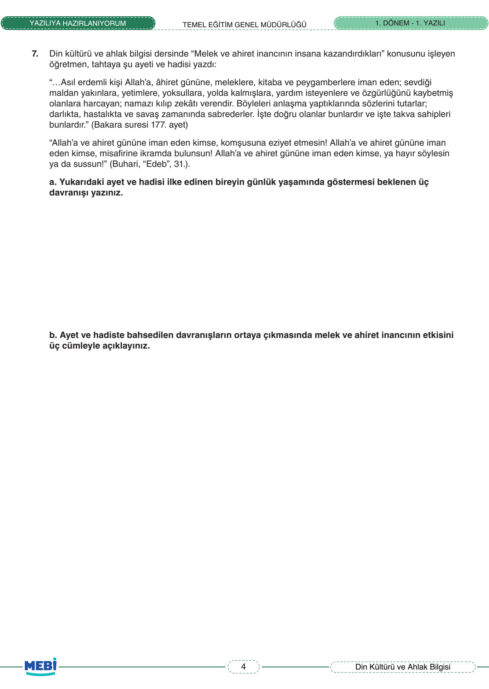
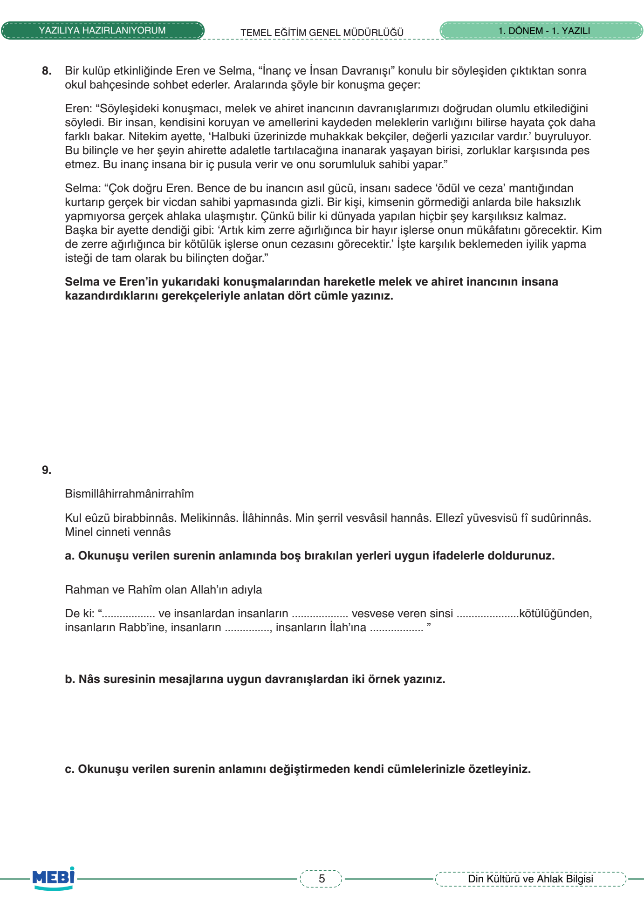
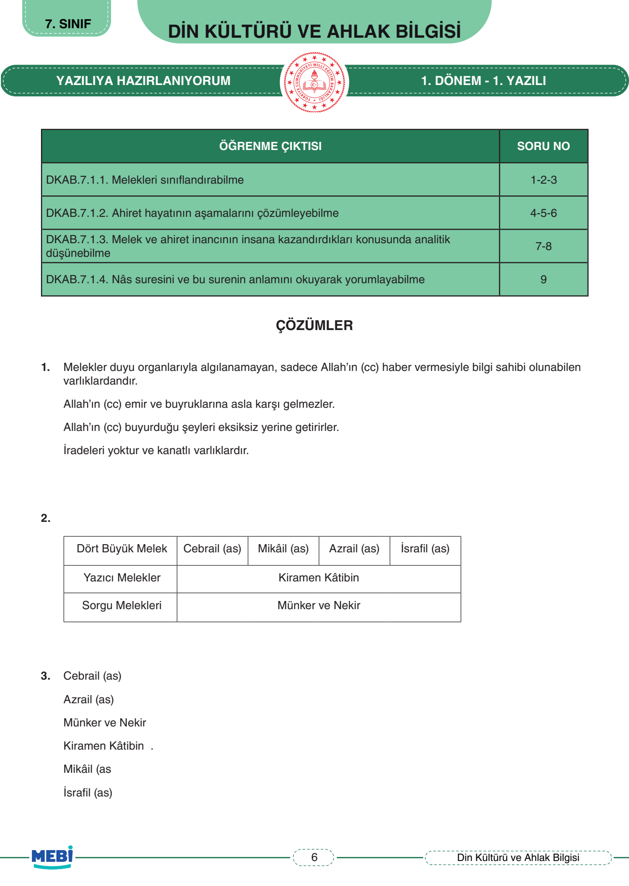
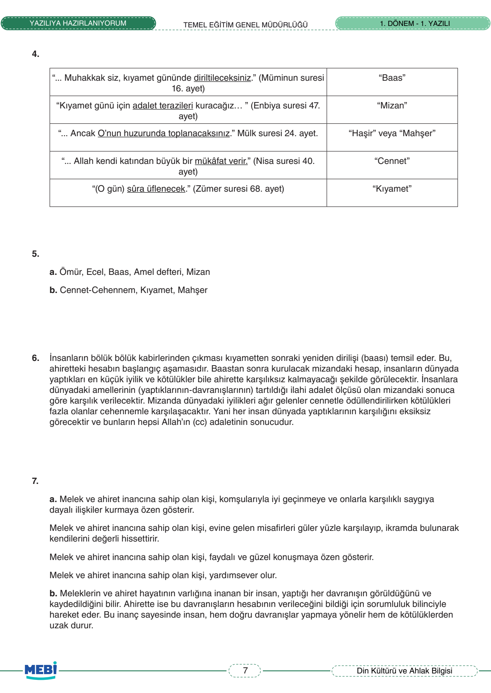
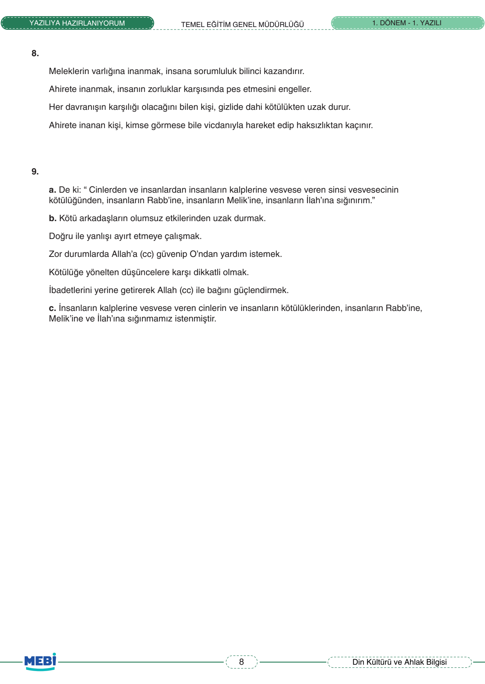

🕌 7. Sınıf Din Kültürü 1. Dönem 1. Yazılı (MEBİ)
Melek ve Ahiret İnancı • Dört Büyük Melek • Ahiretin Aşamaları • 9 Sorunun Tamamı Çözümlü
0
Mevcut Puan / 100


Soru 1
Varlıklar Âlemi ve Meleklerin Özellikleri
10 Puan
📌 MEBİ Resmi Öğretmen Çözümü & Model Yanıt:
Meleklerin Özellikleri:
Melekler duyu organlarımızla (göz, kulak vb.) algılanamayan, nurdan yaratılmış ruhani varlıklardır. Gözle görülememeleri onların yok olduğu anlamına gelmez; akıl, rüzgar ve elektrik gibi meleklerin varlığını da Allah'ın peygamberleri aracılığıyla bildirdiği vahiy sayesinde kesin olarak biliriz.
Melekler duyu organlarımızla (göz, kulak vb.) algılanamayan, nurdan yaratılmış ruhani varlıklardır. Gözle görülememeleri onların yok olduğu anlamına gelmez; akıl, rüzgar ve elektrik gibi meleklerin varlığını da Allah'ın peygamberleri aracılığıyla bildirdiği vahiy sayesinde kesin olarak biliriz.
Puanlama:
Soru 2
Dört Büyük Melek ve Görevleri Tablosu
15 Puan
📌 MEBİ Resmi Öğretmen Çözümü & Model Yanıt:
• Cebrail (a.s.): Allah'ın emir ve vahiylerini peygamberlere iletmekle görevlidir.
• Mikâil (a.s.): Yağmur, rüzgâr gibi tabiat olaylarını ve rızıkları idare etmekle görevlidir.
• İsrâfil (a.s.): Kıyamet günü ve yeniden dirilişte Sûr borusuna üflemekle görevlidir.
• Azrâil (a.s.): Eceli gelen canlıların ruhunu teslim almakla görevlidir.
• Mikâil (a.s.): Yağmur, rüzgâr gibi tabiat olaylarını ve rızıkları idare etmekle görevlidir.
• İsrâfil (a.s.): Kıyamet günü ve yeniden dirilişte Sûr borusuna üflemekle görevlidir.
• Azrâil (a.s.): Eceli gelen canlıların ruhunu teslim almakla görevlidir.
Puanlama:
Soru 3
Diğer Melekler (Kirâmen Kâtibîn, Münker-Nekir)
10 Puan
📌 MEBİ Resmi Öğretmen Çözümü & Model Yanıt:
• İnsanların sevap ve günahlarını kaydeden melekler: Kirâmen Kâtibîn (Yazıcı Melekler)
• Kabirde insanları sorguya çeken melekler: Münker ve Nekir
• Cennet ve cehennem görevlisi melekler: Rıdvan (Cennet) ve Mâlik (Cehennem)
• Kabirde insanları sorguya çeken melekler: Münker ve Nekir
• Cennet ve cehennem görevlisi melekler: Rıdvan (Cennet) ve Mâlik (Cehennem)
Puanlama:
Soru 4
Ahiret Hayatının Aşamaları (Kıyamet, Baas, Haşr, Mizan)
15 Puan
📌 MEBİ Resmi Öğretmen Çözümü & Model Yanıt:
• Ölümden sonra yeniden diriliş: Ba's (Yeniden Diriliş)
• İnsanların toplanması ve toplanma yeri: Haşr ve Mahşer
• Amellerin, sevap ve günahların tartıldığı ilahi adalet terazisi: Mîzan
• Sorgu ve hesap sonrası ebedi kalış yerleri: Cennet veya Cehennem
• İnsanların toplanması ve toplanma yeri: Haşr ve Mahşer
• Amellerin, sevap ve günahların tartıldığı ilahi adalet terazisi: Mîzan
• Sorgu ve hesap sonrası ebedi kalış yerleri: Cennet veya Cehennem
Puanlama:



Soru 5
Ömür, Ecel ve Ahiret Sorumluluğu
10 Puan
📌 MEBİ Resmi Öğretmen Çözümü & Model Yanıt:
Ömür, Ecel ve Sorumluluk:
Her canlının Allah tarafından takdir edilmiş bir yaşam süresi (ömür) ve bu sürenin sona erdiği an (ecel) vardır. Ahiret inancına sahip birey, dünyanın geçici bir imtihan yeri olduğunu bilir; bu yüzden ömrünü güzel ahlakla, kul hakkından sakınarak ve topluma faydalı amellerle geçirir.
Her canlının Allah tarafından takdir edilmiş bir yaşam süresi (ömür) ve bu sürenin sona erdiği an (ecel) vardır. Ahiret inancına sahip birey, dünyanın geçici bir imtihan yeri olduğunu bilir; bu yüzden ömrünü güzel ahlakla, kul hakkından sakınarak ve topluma faydalı amellerle geçirir.
Puanlama:
Soru 6
Amel Defteri ve İlahi Adalet
10 Puan
📌 MEBİ Resmi Öğretmen Çözümü & Model Yanıt:
Açıklama:
İnsanların kabirlerinden çıkması yeniden dirilişi (ba's) simgeler. Herkesin dünyada yaptığı zerre kadar hayrın da şerrin de kaydedildiği amel defteri kendisine verilerek eksiksiz bir adaletle hesaba çekilecektir.
İnsanların kabirlerinden çıkması yeniden dirilişi (ba's) simgeler. Herkesin dünyada yaptığı zerre kadar hayrın da şerrin de kaydedildiği amel defteri kendisine verilerek eksiksiz bir adaletle hesaba çekilecektir.
Puanlama:
Soru 7
Melek ve Ahiret İnancının İnsana Kazandırdıkları
10 Puan
📌 MEBİ Resmi Öğretmen Çözümü & Model Yanıt:
1. Otokontrol ve Sorumluluk Bilinci: İnsan meleklerin kendisini kaydettiğini bildiği için kimsenin görmediği yerlerde bile yalandan, hırsızlıktan ve kötülükten uzak durur.
2. İç Huzur ve Adalet İnancı: Dünyada haksızlığa uğrasa bile ahirette hakkını alacağını bilmek insanı teselli eder, ölüm korkusunu hafifletir ve huzur verir.
2. İç Huzur ve Adalet İnancı: Dünyada haksızlığa uğrasa bile ahirette hakkını alacağını bilmek insanı teselli eder, ölüm korkusunu hafifletir ve huzur verir.
Puanlama:
Soru 8
İnanç ve İnsan Davranışı İlişkisi
10 Puan
📌 MEBİ Resmi Öğretmen Çözümü & Model Yanıt:
İnanç-Ahlak İlişkisi:
İnanç, insanın tutum ve davranışlarının temel belirleyicisidir. Allah'a ve ahirete samimiyetle inanan bir kişi, inancını sözde bırakmaz; dürüst, adil, yardımsever ve merhametli davranarak inancını ahlakına yansıtır.
İnanç, insanın tutum ve davranışlarının temel belirleyicisidir. Allah'a ve ahirete samimiyetle inanan bir kişi, inancını sözde bırakmaz; dürüst, adil, yardımsever ve merhametli davranarak inancını ahlakına yansıtır.
Puanlama:
Soru 9
Hz. İsa'nın Hayatı ve Mucizeleri
10 Puan
📌 MEBİ Resmi Öğretmen Çözümü & Model Yanıt:
• Babası olmadan, mucizevi şekilde Hz. Meryem'den dünyaya gelmiştir.
• Henüz beşikte bir bebekken konuşmuştur.
• Allah'ın izniyle körleri ve alacalı hastaları iyileştirmiş, ölüleri diriltmiştir.
• Kendisine dört büyük kutsal kitaptan biri olan İncil verilmiştir.
• Henüz beşikte bir bebekken konuşmuştur.
• Allah'ın izniyle körleri ve alacalı hastaları iyileştirmiş, ölüleri diriltmiştir.
• Kendisine dört büyük kutsal kitaptan biri olan İncil verilmiştir.
Puanlama:


